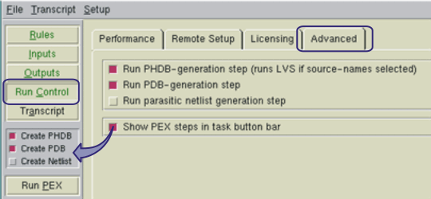
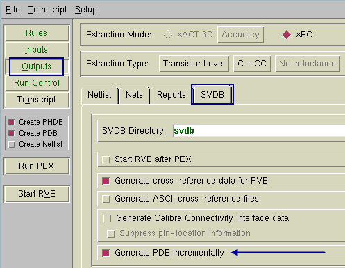
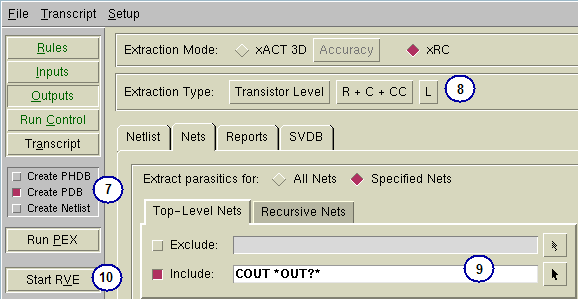

To mix parasitics
in Calibre Interactive, you need to use some of the advanced options.
Prerequisites
A
valid PEX rule file for this layout.
Layout
database that is LVS-clean.
For more information refer
to “Basic Extraction Methods”.
Procedure
- Start the PEX interface in
Calibre Interactive.
- Load a runset or rulefile.
- Enable the PEX step controls.
Figure 1. Enabling Extraction Steps in Calibre Interactive
- Click the Run Control button in the left
pane.
- Click the Advanced tab.
- Select Show PEX steps in task button bar.
- Uncheck the Create Netlist
step in the PEX step controls.
- Enable cumulative extraction
steps.
Figure 2. Generating PDB Incrementally
- Click the Outputs button in the left
pane.
- Click the SVDB tab.
- Select Generate PDB incrementally.
- After setting up the extraction
type and any other settings, run extraction on the input.
- In the PEX step controls,
uncheck Create PHDB.
- Reset the extraction type.
Figure 3. Adding Nets to Existing PDB
- Specify the nets the new extraction
type applies to under the Nets tab.
- Click Run PEX.
- Repeat steps 8 through 10 as needed.
- Generate the netlist.
- In the PEX step controls,
select Create Netlist.
- Uncheck Create PDB.
- Click Run PEX.
Results
Check the Transcripts pane to verify
the run completed with no errors. If you have selected “View netlist
after PEX finishes” in the Outputs pane, a text viewer appears with
the generated netlist loaded.